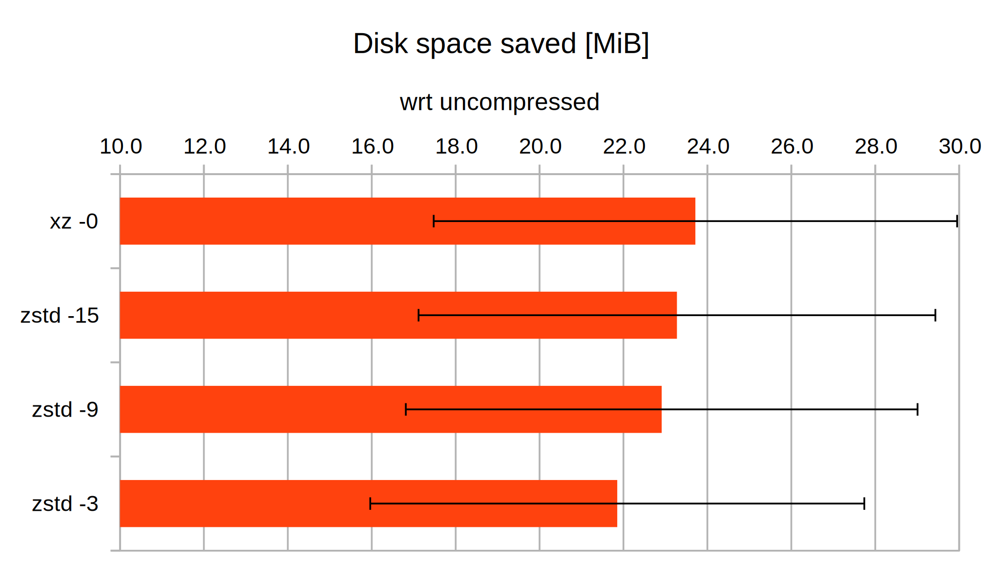
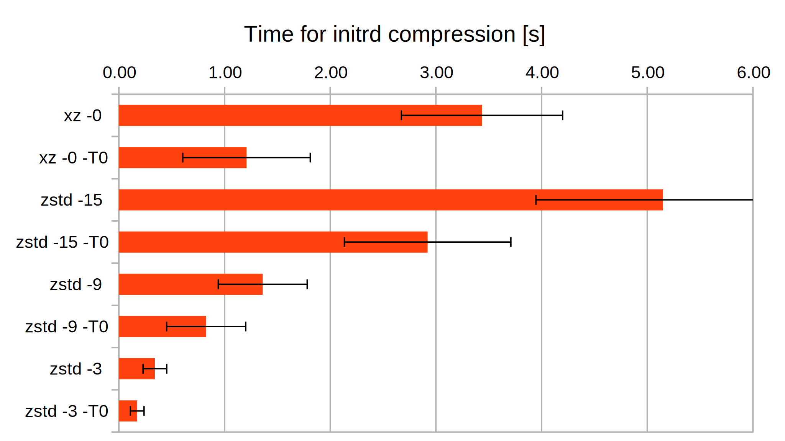
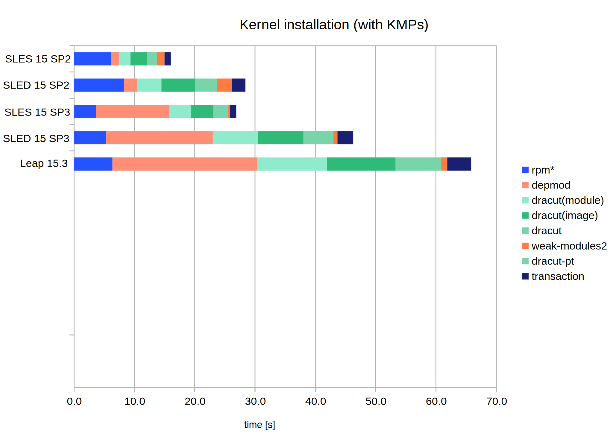
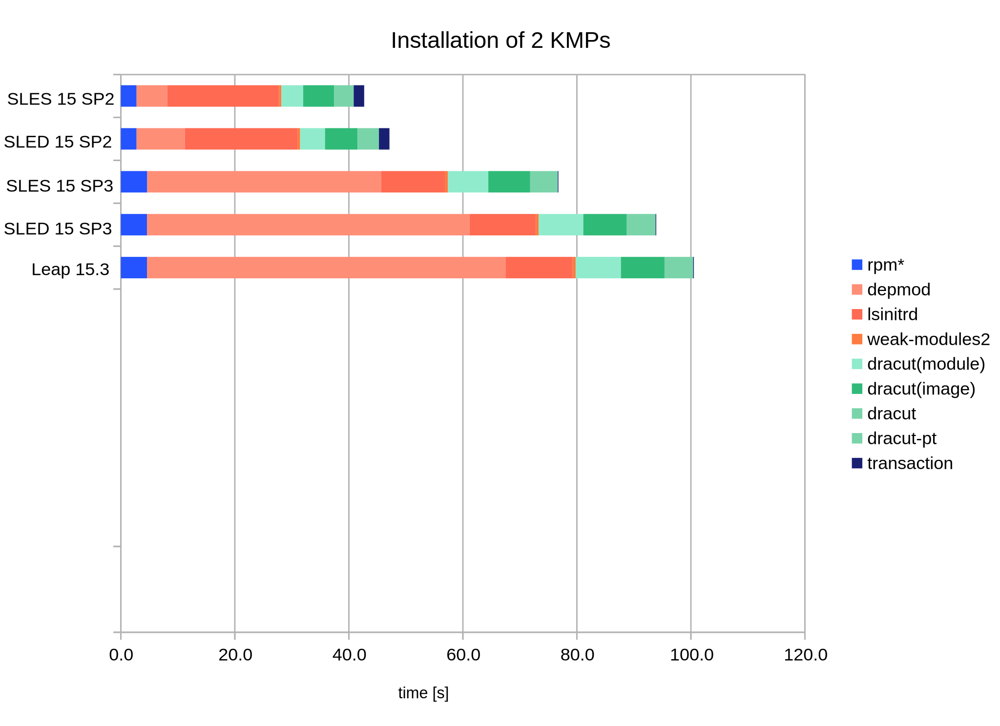

# Agenda
1. Compression Algorithms: Speed and Efficiency (Martin)
> Comparing `xz` and `zstd` for initramfs images and kernel modules
2. Profiling Installation of Kernel and KMPs (Martin)
> Assessing the effect of current and future optimizations
3. Using cpio-reflinks for Initramfs images (David)
> In-depth discussion of CoW reflinking for initramfs images
Slides: https://mwilck.github.io/labsconf2021
Are you a Leap 15.3 user?
kernel installation or update is slooow
Installation of Kernel Module Packages (KMPs)
is even slower
On SLE15-SP3 / Leap 15.3, it seems
worse than before
In this talk, we will examine the reasons and possible remedies
... with special attention to initramfs creation
Compression Algorithms: Speed and Efficiency
Compression: Initramfs and Kernel Modules
## Initramfs Compression
* **xz** used since SLE12
* **zstd** supported with kernel v5.9, `dracut` 054
* **zstd** will be default in SLE15-SP4
## Module Compression
* **xz** used in SLE15-SP3 / Leap 15.3 and TW
* **zstd** supported with `kmod` 28, kernel v5.13
* **zstd** planned for SLE15-SP4 (?)
Initramfs Compression
Measurement on 20 different systems
payload – uncompressed initramfs – varies
between systems, size 40(±7)MiB
x86_64, ppc64le, aarch64, s390x,
virtual and bare metal, single-board to large server
SLE15-SP2/SP3, Tumbleweed


Compression: Initramfs and Kernel Modules
## Initramfs Compression
* **xz** used since SLE12
* **zstd** supported with kernel v5.9, `dracut` 054
* **zstd** will be default in SLE15-SP4
## Module Compression
* **xz** used in SLE15-SP3 / Leap 15.3 and TW
* **zstd** supported with `kmod` 28, kernel v5.13
* **zstd** planned for SLE15-SP4 (?)
Module Compression: Effect on Speed
### Booting
A kernel typically loads between 2MiB and 20MiB of modules during boot.
This is loaded in fractions of a second on any decent computer.
### Building
Time required for module compression in OBS is decreased from ~30s to
~5s.
This is negligble compared to the total kernel build time.
### Other
The runtime of `depmod` is strongly affected by module compression.
Does this matter?
We will see ...
Profiling Installation of Kernel and KMPs
What Is weak-modules2 …
… and why does it run so long?
### Kernel installation / update
1. Call `depmod`
2. If KMPs are installed, for each KMP:
- check KABI compatibility (calling `depmod`) and create symlinks under `weak-modules/`
3. Call `dracut` to rebuild the initramfs.
Similar for kernel subpackages (`-extra`)

What Is weak-modules2 …
… and why does it run so long?
### KMP installation
For all installed kernels:
1. Check if the KMP being installed replaces an existing one
2. Attempt replacement or addition, check KABI compatibility with
`depmod`
3. Add symlinks under `weak-modules/`
4. Run `depmod`
5. If modules in Initramfs are affected (`lsinitrd`), schedule Initramfs rebuild

Optimization of the Installation Process
Replace dracut's slow lsinitrd program with a
simpler, faster one;
For initramfs, use cpio reflinking for the initramfs when
possible, zstd otherwise;
Use zstd compression for kernel modules;
Postpone initramfs building from %post
to %posttrans,
Incremental depmod:
Avoid scanning every module, always. Patch set in the works;